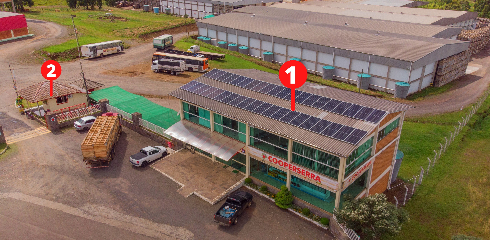
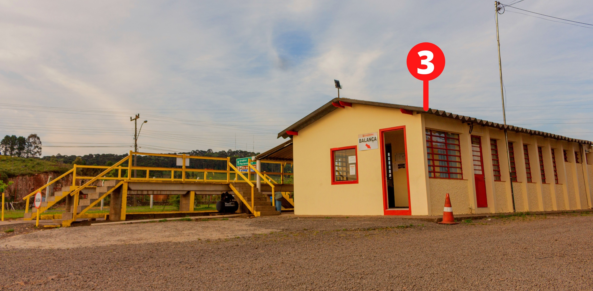
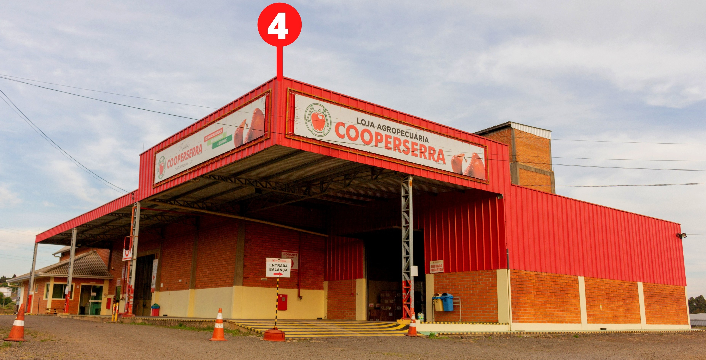

Estrutura
A Cooperserra conta com uma área de 65 mil metros quadrados, um total de 18 mil metros quadrados de estrutura física, divididos em Câmaras Frigoríficas, Administrativo, Loja Agropecuária, Packing House e Armazéns de Insumos, que estão sediados nos municípios de São Joaquim e Urupema.
Possui uma capacidade frigorífica de 17 mil toneladas para armazenamento de frios e processamento de frutas de 22 mil toneladas.
Edifício Principal e Guarita
1.
No Edifício Principal é onde estão localizados o Centro Administrativo, Departamento Técnico, Recepção e a Loja Agropecuária, a qual atende sócios e terceiros.
2.
A Guarita é a porta de entrada para acessar o Armazém de Insumos e o Packing House.
Balança
3.
Aqui é onde tudo começa. Após a colheita das frutas é feito recebimento, pesagem e análise das frutas que seguem para estocagem nas Câmaras Frigoríficas, ou para venda.
Depósito
4.
Armazenagem de insumos.
Packing House

5.
No Packing House é onde inicia-se todo o processo de seleção das frutas, através de uma classificação por “cor, tamanho, defeito e categoria”, feita pelo IN5 do Ministério da Agricultura, Pecuária e Abastecimento (MAPA). Este processo é todo automatizado, logo após, é feito o processo de embalamento das frutas, que são transportadas para todo Brasil e exterior.
Armazenagem das Maçãs

6.
As Câmaras Frias são ambientes de alta tecnologia no requisito de refrigeração responsáveis pela armazenagem e preservação das maçãs que saem do pomar.
Já o armazenamento das maçãs embaladas é feito através do Drive-in (foto central), consiste em dispor às frutas em ordem cronológica garantindo a qualidade e o rastreamento da maçã.